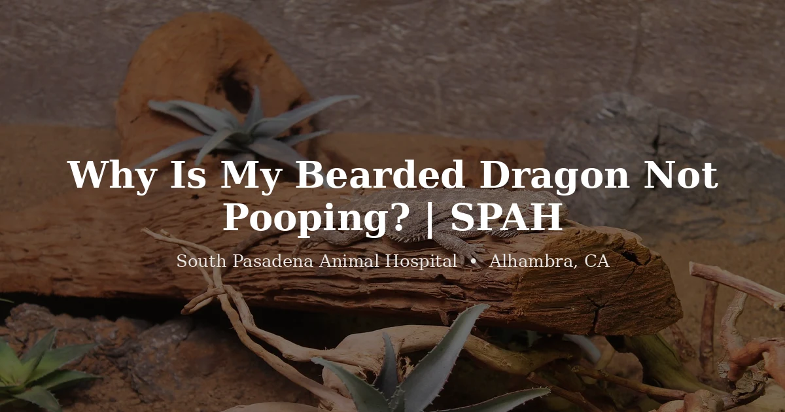

October 14, 2026 · 6 min read
Why Is My Bearded Dragon Not Pooping?

Bearded dragon owners watch the litter habits of their lizards more closely than almost any other pet owner we meet, and for good reason. In a reptile, how often it poops is a surprisingly honest readout of whether the whole system is working. So when the droppings stop, it's worth paying attention. The catch is that "not pooping" covers everything from completely normal to a true emergency, and the difference comes down to a few specific things.
Let's figure out which situation you're in.
First, what counts as normal
There's no single right answer for how often a bearded dragon should go, because it shifts with age and diet. A young, fast-growing dragon eating lots of insects might poop every day. An adult on a more vegetable-heavy diet may only go every few days, or even once a week, and still be perfectly healthy. And a dragon that's slipping into brumation can go weeks without a bowel movement while it sleeps the season away. So the number itself matters less than the change: what's normal for your dragon, and has that shifted?
The fixable, environmental reasons
Most of the slowdowns we see trace back to the enclosure, not disease.
Temperatures are too low
This is the big one. Bearded dragons are cold-blooded and rely entirely on external heat to digest. If the basking spot isn't hitting 100 to 110°F for an adult, food just sits in the gut instead of moving through, and the pooping stops. Check your temperatures with an infrared temperature gun rather than a stick-on dial, which tends to read wildly off. Getting the heat right fixes a lot of these cases on its own.
Dehydration
A dragon that isn't well hydrated produces harder, slower-moving stool. Make sure there's a clean water source, mist appropriately for your setup, and offer hydrating vegetables. A warm, shallow soak a few times a week helps some dragons both hydrate and go.
Diet and fiber
Too few vegetables, not enough variety, or a diet that's heavy on hard-to-digest items can all slow things down. Leafy greens add the fiber that keeps the gut moving — our bearded dragon diet guide covers the right balance.
The one that needs a vet: impaction
Here is where not-pooping turns serious. Impaction is a blockage in the digestive tract, and it's one of the more common reptile emergencies we treat. It often happens when a dragon swallows loose substrate like sand or fine particles while hunting, eats prey that's too big (a good rule is nothing wider than the space between the eyes), or gets too cool or too dry to digest. Parasites can play a role too.
What makes impaction different from a simple slow week is the company it keeps. A blocked dragon tends to strain with nothing to show for it, stops eating, and develops a swollen or firm belly. In worse cases you may see weakness or even dragging of the back legs, because a blockage sitting in the abdomen can press on the nerves to the hind limbs. That last sign in particular is a get-seen-now flag. Impaction is treatable, but it needs a reptile vet, not a home remedy.
What you can safely try, and what to leave alone
For a mildly constipated but otherwise bright, eating dragon, a few gentle things are reasonable: confirm and correct the basking temperature, offer warm shallow soaks, and make sure it's hydrated and getting fiber. Those are comfort and husbandry measures, and they often do the trick. What we'd ask you not to do is reach for oils or laxatives, or try to manually push a blockage out. Those can do harm, and if a dragon is truly impacted, it needs proper assessment rather than experiments.
When this needs a reptile vet
Get your dragon seen if it:
- Hasn't passed stool in a way that's clearly off for its normal pattern, and isn't eating
- Is straining to defecate with no result
- Has a swollen, firm, or distended belly
- Seems weak, or is dragging or struggling with its back legs
- Is lethargic or losing weight
We see bearded dragons routinely at our reptile vet in Alhambra, and sorting a simple husbandry slowdown from an impaction is exactly the kind of call an exam settles quickly. Our pieces on a bearded dragon that won't eat and the signs a dragon needs a vet are useful alongside this, and our pricing page covers what to expect.
Frequently Asked Questions
How often should a bearded dragon poop?
It varies by age and diet. Young insect-eating dragons often go daily; adults on more vegetables may go every few days to a week, which is normal. During brumation a dragon can go weeks. What matters is a change from your dragon's own usual pattern, especially alongside not eating or discomfort.
What is impaction in a bearded dragon?
Impaction is a blockage in the digestive tract. It can follow swallowing loose substrate, eating oversized prey, or being dehydrated or too cool to digest. Warning signs include straining with no result, a swollen or firm belly, loss of appetite, and sometimes weakness or dragging of the back legs. It needs veterinary care.
Can a warm bath help my bearded dragon poop?
A warm, shallow soak is a reasonable comfort measure for mild constipation, and hydration plus correct basking temperatures often get things moving. But a soak won't fix a true impaction, and you should not give oils or laxatives or try to push out a blockage. If your dragon is straining, not eating, swollen, or weak, see a reptile vet.
When should I worry about my bearded dragon not pooping?
See a vet if the gap is clearly abnormal for your dragon and it's also not eating, straining, has a swollen or hard belly, seems weak, or is dragging its back legs. Those point toward impaction or another problem. A dragon simply in brumation that still looks healthy and bright is usually fine.